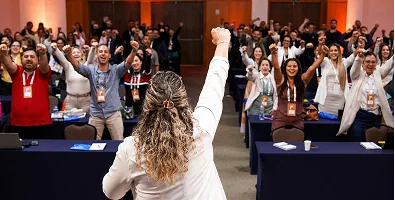

Formação presencial de 12 horas, construída a partir do Método WFA, para quem assumiu — ou vai assumir — a liderança de uma equipe de farmácia e precisa de repertório prático para conduzir.
Por que esta formação existe
Ter um cargo de liderança não significa estar preparado para liderar. Muitos profissionais assumem equipes com boa vontade, mas sem ferramentas para comunicar, orientar, dar feedback, acompanhar indicadores e organizar a rotina.
O Essencial Líder Farma transforma esses desafios em uma trilha prática, conectada à realidade do varejo farmacêutico.
O que vamos trabalhar
- O papel do líder e como conduzir uma equipe com clareza
- Comunicação, orientação, cobrança e feedback
- Organização da rotina e acompanhamento dos indicadores
- Protocolos e tecnologia a serviço da liderança
- Como transformar acordos e planos em execução
- Ferramentas aplicáveis na rotina da farmácia
Para quem é
Líderes, gerentes, gestores e profissionais que estão se preparando para assumir uma equipe de farmácia, em operações de qualquer porte.
Como funciona
São 12 horas de formação presencial, com conteúdo, aplicação prática e troca dirigida entre os participantes.
Datas, local e inscrição
24 de outubro de 2026, em Goiânia (GO). A carga horária total é de 12 horas.
Para receber informações sobre vagas e inscrição, fale com a equipe.